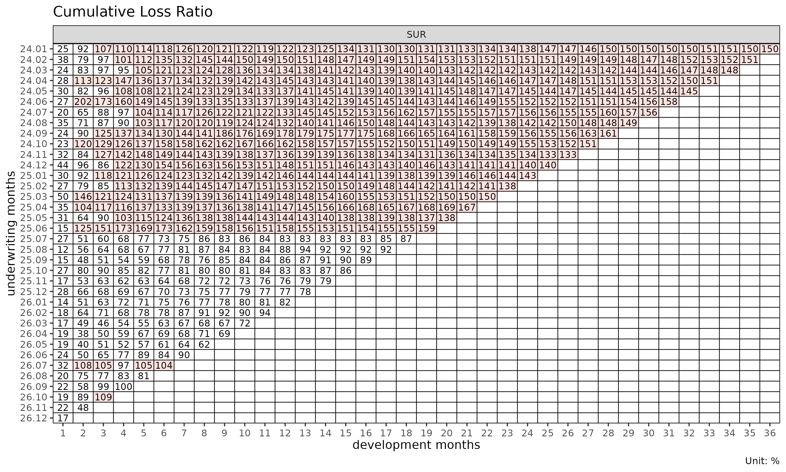

Get started: lossratio 시작하기
Source:vignettes/articles/getting-started-ko.Rmd
getting-started-ko.Rmd영어 원본 보기: Getting started with lossratio
이 문서는 lossratio 의 전체 파이프라인을 내장 합성
experience 데이터 위에서 따라간다. long-format raw 데이터에서 시작하여
적합된 손해율 추정까지 이어진다.
입력 형태
lossratio 는 long-format experience 데이터를 입력으로
사용한다 — 한 행은 (코호트 × 경과 기간 × 그룹) 셀 하나에 대응한다. 내장
데이터셋 experience 는 2,664 행 테이블로, 여러 집계 주기의
calendar / underwriting 기간 컬럼, coverage 그룹 컬럼,
기간별 금액 컬럼 (loss_incr, premium_incr) 을
포함한다.
library(lossratio)
data(experience)
str(experience)
#> Classes 'data.table' and 'data.frame': 2664 obs. of 15 variables:
#> $ coverage : chr "CI" "CI" "CI" "CI" ...
#> $ uy : Date, format: "1975-07-18" "1975-07-18" ...
#> $ uyh : Date, format: "2024-01-01" "2024-01-01" ...
#> $ uyq : Date, format: "2024-01-01" "2024-01-01" ...
#> $ uym : Date, format: "2024-01-01" "2024-01-01" ...
#> $ cy : int 2024 2024 2024 2024 2024 2024 2024 2024 2024 2024 ...
#> $ cyh : Date, format: "2024-01-01" "2024-01-01" ...
#> $ cyq : Date, format: "2024-01-01" "2024-01-01" ...
#> $ cym : Date, format: "2024-01-01" "2024-02-01" ...
#> $ elap_y : int 1 1 1 1 1 1 1 1 1 1 ...
#> $ elap_h : int 1 1 1 1 1 1 2 2 2 2 ...
#> $ elap_q : int 1 1 1 2 2 2 3 3 3 4 ...
#> $ elap_m : int 1 2 3 4 5 6 7 8 9 10 ...
#> $ loss_incr : num 1262380 11255763 11281309 33602387 7152622 ...
#> $ premium_incr: num 27993106 29183931 29401966 26570540 27471886 ...
#> - attr(*, ".internal.selfref")=<pointer: (nil)>1단계 — 검증 및 코어션
exp <- as_experience(experience)
class(exp)
#> [1] "Experience" "data.table" "data.frame"as_experience() 는 필수 컬럼 (cym,
uym, loss_incr, premium_incr) 의
존재를 확인하고, 날짜 컬럼을 코어션하며, 클래스를 부여한다. 변형 없이
검증만 필요하면 check_experience(df) 를 사용한다.
2단계 — 코호트 × 경과 기간 구조 구축
tri <- build_triangle(exp[coverage == "SUR"], group_var = coverage)
class(tri)
#> [1] "Triangle" "data.table" "data.frame"
names(tri)
#> [1] "coverage" "n_obs" "cohort"
#> [4] "dev" "loss" "loss_incr"
#> [7] "premium" "premium_incr" "lr"
#> [10] "lr_incr" "margin" "margin_incr"
#> [13] "profit" "profit_incr" "loss_prop"
#> [16] "loss_incr_prop" "premium_prop" "premium_incr_prop"build_triangle() 의 동작:
- 인구통계 차원을 집계하여 제거한다 (여기서는
age_band,gender), - 누적 컬럼 (
loss,premium) 을 추가한다, - 파생 지표 (
margin,lr,lr, 비율) 를 추가한다, - 코호트 / 경과 기간 컬럼을 표준명
cohort와dev로 rename 한다, - 원본 컬럼명은 attribute (
cohort_var,dev_var) 로 보존하여 이후 plot 라벨에서 활용 가능하게 한다.
3단계 — 진단
plot(tri) # 코호트별 lr 궤적
plot_triangle(tri) # lr 셀의 heatmap
summary(tri) # 경과 기간별 그룹 통계량
#> Key: <coverage, dev>
#> coverage dev n_obs lr_mean lr_median lr_wt lr_incr_mean
#> <char> <int> <int> <num> <num> <num> <num>
#> 1: SUR 1 36 0.2522898 0.2393582 0.2525932 0.2522898
#> 2: SUR 2 35 0.8030639 0.7859128 0.7890646 1.3572087
#> 3: SUR 3 34 0.9258662 0.8997912 0.9204360 1.1519240
#> 4: SUR 4 33 0.9856772 0.9716558 0.9778502 1.1797269
#> 5: SUR 5 32 1.0336648 1.0502252 1.0447602 1.2268717
#> 6: SUR 6 31 1.0945723 1.1832332 1.0892484 1.3676102
#> 7: SUR 7 30 1.1226602 1.2307968 1.1260090 1.2795209
#> 8: SUR 8 29 1.1476579 1.2385036 1.1607484 1.2695757
#> 9: SUR 9 28 1.1867831 1.2831350 1.1993421 1.3565716
#> 10: SUR 10 27 1.2189764 1.3392377 1.2161749 1.3443230
#> 11: SUR 11 26 1.2398508 1.3528781 1.2306363 1.2546351
#> 12: SUR 12 25 1.2748031 1.3729018 1.2943160 1.5245126
#> 13: SUR 13 24 1.3088959 1.4291378 1.3202706 1.4851972
#> 14: SUR 14 23 1.3391485 1.4270947 1.3407729 1.4339388
#> 15: SUR 15 22 1.3721398 1.4269041 1.3628824 1.5014265
#> 16: SUR 16 21 1.3940933 1.4310343 1.3828890 1.3639728
#> 17: SUR 17 20 1.4097869 1.4405611 1.3901633 1.2645684
#> 18: SUR 18 19 1.4308462 1.4384627 1.4131833 1.3636669
#> 19: SUR 19 18 1.4674058 1.4314176 1.4992667 1.5607399
#> 20: SUR 20 17 1.4630633 1.4413678 1.4973696 1.5135877
#> 21: SUR 21 16 1.4721202 1.4604722 1.5143362 1.5431636
#> 22: SUR 22 15 1.4559264 1.4614643 1.4742311 1.3944927
#> 23: SUR 23 14 1.4530162 1.4526203 1.4719093 1.4497984
#> 24: SUR 24 13 1.4623530 1.4505401 1.4765376 1.5517800
#> 25: SUR 25 12 1.4673860 1.4686413 1.4836300 1.5166769
#> 26: SUR 26 11 1.4824851 1.4947915 1.4961973 1.6915615
#> 27: SUR 27 10 1.5033314 1.5018660 1.5214048 1.6430325
#> 28: SUR 28 9 1.5055939 1.4952451 1.5305297 1.6071526
#> 29: SUR 29 8 1.4998251 1.4964613 1.5184059 1.6846552
#> 30: SUR 30 7 1.5011849 1.5030635 1.5172585 1.5112226
#> 31: SUR 31 6 1.4961175 1.4880367 1.5006586 1.6444377
#> 32: SUR 32 5 1.4890487 1.4954533 1.4933984 1.7690619
#> 33: SUR 33 4 1.5086788 1.5126330 1.5093436 1.8628826
#> 34: SUR 34 3 1.5021688 1.5068628 1.5004958 1.3432240
#> 35: SUR 35 2 1.5066599 1.5066599 1.5083770 1.2290223
#> 36: SUR 36 1 1.4962058 1.4962058 1.4962058 1.2855791
#> coverage dev n_obs lr_mean lr_median lr_wt lr_incr_mean
#> <char> <int> <int> <num> <num> <num> <num>
#> lr_incr_median lr_incr_wt
#> <num> <num>
#> 1: 0.2393582 0.2525932
#> 2: 1.2618216 1.3280769
#> 3: 1.1517980 1.1728982
#> 4: 1.1167740 1.1742272
#> 5: 1.2663384 1.3110155
#> 6: 1.2676379 1.2752751
#> 7: 1.1820596 1.3386507
#> 8: 1.2534498 1.3649818
#> 9: 1.2365352 1.3663756
#> 10: 1.2201009 1.2953678
#> 11: 1.2665782 1.2806481
#> 12: 1.4833182 1.5935069
#> 13: 1.3855135 1.4462040
#> 14: 1.3888345 1.5051091
#> 15: 1.3047737 1.5731446
#> 16: 1.3118128 1.3730719
#> 17: 1.2342326 1.2723713
#> 18: 1.2757634 1.4565681
#> 19: 1.4756463 1.5827383
#> 20: 1.4438046 1.5321948
#> 21: 1.5642856 1.5803810
#> 22: 1.3370493 1.4612516
#> 23: 1.3865805 1.4391562
#> 24: 1.4213562 1.4363201
#> 25: 1.4433495 1.4198077
#> 26: 1.5738704 1.5628175
#> 27: 1.4080903 1.8551455
#> 28: 1.4361840 1.7482784
#> 29: 1.8359202 1.5456207
#> 30: 1.3661138 1.4455959
#> 31: 1.4673015 1.5987246
#> 32: 1.5883761 1.6630214
#> 33: 1.8353114 1.8309606
#> 34: 1.3503130 1.3440389
#> 35: 1.2290223 1.1775157
#> 36: 1.2855791 1.2855791
#> lr_incr_median lr_incr_wt
#> <num> <num>4단계 — 경과 기간 모형화
코호트 발달을 보는 두 가지 상호 보완적 관점.
# ATA 인자(age-to-age factor)
fit_ata(tri, loss_var = "loss")
#> <ATAFit>
#> alpha : 1
#> sigma_method: min_last2
#> recent : all
#> regime_break: none
#> use_maturity: FALSE
#> groups : coverage
#> n_groups : 1
#> ata links : 35
# 노출 기반(exposure-driven) 강도
fit_ed(tri, loss_var = "loss", premium_var = "premium")
#> <EDFit>
#> method : basic
#> loss_var : loss
#> premium_var: premium
#> alpha : 1
#> sigma_method: min_last2
#> recent : all
#> regime_break: none
#> groups : coverage
#> n_groups : 1
#> links : 35fit_ata() 는 경과 기간 링크별로 선택된 ATA 인자를
반환한다. fit_ed() 는 강도 인자
를 반환한다. 두 출력 모두 아래 추정 방법의 입력으로 사용된다.
5단계 — 추정
fit_cl() 은 chain ladder 추정을 수행한다.

summary(cl)
#> coverage cohort latest loss_ult reserve proc_se param_se
#> <char> <Date> <num> <num> <num> <num> <num>
#> 1: SUR 2024-01-01 410248523 410248523 0 0 0
#> 2: SUR 2024-02-01 976330446 1001441304 25110859 2531458 3955123
#> 3: SUR 2024-03-01 978486044 1026151241 47665197 3814581 4714708
#> 4: SUR 2024-04-01 2029909922 2186771224 156861302 6757376 10681348
#> 5: SUR 2024-05-01 624219442 697669308 73449866 4363670 3505408
#> 6: SUR 2024-06-01 802880717 931393933 128513217 17839243 8552360
#> 7: SUR 2024-07-01 2539141550 3050990158 511848609 35868594 30065540
#> 8: SUR 2024-08-01 393678329 488218204 94539875 15565580 5005702
#> 9: SUR 2024-09-01 1364052543 1751869309 387816766 37974812 20617469
#> 10: SUR 2024-10-01 979266044 1311793844 332527800 38476284 16848121
#> 11: SUR 2024-11-01 604685680 848103124 243417444 35705775 11815794
#> 12: SUR 2024-12-01 1026345365 1497869026 471523662 51388393 21863585
#> 13: SUR 2025-01-01 1912177598 2901492850 989315252 75652022 43699697
#> 14: SUR 2025-02-01 733902485 1160045952 426143467 51706358 18164458
#> 15: SUR 2025-03-01 415459872 686574146 271114274 41303604 10953686
#> 16: SUR 2025-04-01 3286053525 5687484009 2401430484 122743326 92193953
#> 17: SUR 2025-05-01 1451731151 2645801834 1194070683 93007572 44820097
#> 18: SUR 2025-06-01 629668308 1209024555 579356246 65335432 20807951
#> 19: SUR 2025-07-01 1250954692 2542927187 1291972495 103122195 45366891
#> 20: SUR 2025-08-01 425346694 918120581 492773887 65309695 16748105
#> 21: SUR 2025-09-01 278156543 635470027 357313485 56730542 11811345
#> 22: SUR 2025-10-01 352070325 856446527 504376201 68083946 16155428
#> 23: SUR 2025-11-01 99050502 260916098 161865596 41783536 5172148
#> 24: SUR 2025-12-01 103194015 295637302 192443287 49613732 6201747
#> 25: SUR 2026-01-01 227089023 710560088 483471065 83630550 15622535
#> 26: SUR 2026-02-01 939163073 3276849148 2337686075 192408733 75019695
#> 27: SUR 2026-03-01 112828843 434950050 322121207 72341864 10134999
#> 28: SUR 2026-04-01 82472453 356301149 273828696 68971255 8554342
#> 29: SUR 2026-05-01 141214851 697290588 556075737 119235587 19138513
#> 30: SUR 2026-06-01 136406104 789468809 653062706 136625294 22795772
#> 31: SUR 2026-07-01 149144024 1040451732 891307708 167035988 31397120
#> 32: SUR 2026-08-01 116327076 1008356737 892029661 183650168 32943523
#> 33: SUR 2026-09-01 67465470 783000254 715534784 179944507 27681868
#> 34: SUR 2026-10-01 121626172 2001214853 1879588681 337099735 80042629
#> 35: SUR 2026-11-01 15716444 449653411 433936967 194099313 21020897
#> 36: SUR 2026-12-01 4825085 850839165 846014080 472740731 66059976
#> coverage cohort latest loss_ult reserve proc_se param_se
#> <char> <Date> <num> <num> <num> <num> <num>
#> se cv
#> <num> <num>
#> 1: 0 0.000000000
#> 2: 4695878 0.004689120
#> 3: 6064610 0.005910055
#> 4: 12639356 0.005779917
#> 5: 5597276 0.008022821
#> 6: 19783363 0.021240596
#> 7: 46802699 0.015340167
#> 8: 16350668 0.033490492
#> 9: 43210721 0.024665493
#> 10: 42003377 0.032019800
#> 11: 37610044 0.044346074
#> 12: 55846068 0.037283679
#> 13: 87366423 0.030110852
#> 14: 54804152 0.047243087
#> 15: 42731382 0.062238553
#> 16: 153511071 0.026991033
#> 17: 103243641 0.039021683
#> 18: 68568866 0.056714205
#> 19: 112660294 0.044303390
#> 20: 67422958 0.073435843
#> 21: 57947064 0.091187722
#> 22: 69974434 0.081703215
#> 23: 42102435 0.161363884
#> 24: 49999841 0.169125616
#> 25: 85077215 0.119732612
#> 26: 206516525 0.063022897
#> 27: 73048364 0.167946558
#> 28: 69499718 0.195058921
#> 29: 120761781 0.173187167
#> 30: 138513964 0.175452104
#> 31: 169961173 0.163353252
#> 32: 186581510 0.185035220
#> 33: 182061285 0.232517530
#> 34: 346472299 0.173130985
#> 35: 195234274 0.434188352
#> 36: 477333970 0.561015512
#> se cv
#> <num> <num>fit_lr() 은 손해율 추정을 수행한다. 기본값으로 사용되는
단계 적응형(stage-adaptive) 방식 (method = "sa") 은
성숙점(maturity point) 이전에는 노출 기반 방식, 성숙점 이후에는 chain
ladder 를 적용한다. 전환 지점은 ATA 인자에서 그룹별로 탐지된
성숙점이다.

summary(lr)
#> coverage cohort latest loss_ult reserve premium_ult lr_latest
#> <char> <Date> <num> <num> <num> <num> <num>
#> 1: SUR 2024-01-01 410248523 410248523 0 274192568 1.4962058
#> 2: SUR 2024-02-01 976330446 1001441304 25110859 665667724 1.5107824
#> 3: SUR 2024-03-01 978486044 1026151241 47665197 702047332 1.4771448
#> 4: SUR 2024-04-01 2029909922 2186771224 156861302 1464399411 1.5139132
#> 5: SUR 2024-05-01 624219442 697669308 73449866 483147254 1.4543749
#> 6: SUR 2024-06-01 802880717 931393933 128513217 591568800 1.5796369
#> 7: SUR 2024-07-01 2539141550 3050990158 511848609 1958263736 1.5597190
#> 8: SUR 2024-08-01 393678329 488218204 94539875 327535561 1.4945957
#> 9: SUR 2024-09-01 1364052543 1751869309 387816766 1091733893 1.6079808
#> 10: SUR 2024-10-01 979266044 1311793844 332527800 864204933 1.5129473
#> 11: SUR 2024-11-01 604685680 848103124 243417444 630311112 1.3298743
#> 12: SUR 2024-12-01 1026345365 1497869026 471523662 1057060864 1.3981081
#> 13: SUR 2025-01-01 1912177598 2901492850 989315252 2009045338 1.4274951
#> 14: SUR 2025-02-01 733902485 1160045952 426143467 832229794 1.3793745
#> 15: SUR 2025-03-01 415459872 686574146 271114274 454345989 1.4969280
#> 16: SUR 2025-04-01 3286053525 5687484009 2401430484 3372494517 1.6712898
#> 17: SUR 2025-05-01 1451731151 2645801834 1194070683 1899849125 1.3770835
#> 18: SUR 2025-06-01 629668308 1209024555 579356246 750125232 1.5918247
#> 19: SUR 2025-07-01 1250954692 2542927187 1291972495 2891548083 0.8658750
#> 20: SUR 2025-08-01 425346694 918120581 492773887 976935240 0.9236050
#> 21: SUR 2025-09-01 278156543 635470027 357313485 703906577 0.8920448
#> 22: SUR 2025-10-01 352070325 856446527 504376201 984833526 0.8596968
#> 23: SUR 2025-11-01 99050502 260916098 161865596 324081361 0.7871749
#> 24: SUR 2025-12-01 103194015 295637302 192443287 366444617 0.7813438
#> 25: SUR 2026-01-01 227089023 710560088 483471065 833732379 0.8188282
#> 26: SUR 2026-02-01 939163073 3276849148 2337686075 3286151359 0.9377837
#> 27: SUR 2026-03-01 112828843 434950050 322121207 566316401 0.7193486
#> 28: SUR 2026-04-01 82472453 356301149 273828696 476819836 0.6947510
#> 29: SUR 2026-05-01 141214851 697290588 556075737 1027051058 0.6203897
#> 30: SUR 2026-06-01 136406104 789468809 653062706 783037478 0.8981587
#> 31: SUR 2026-07-01 149144024 1040451732 891307708 859730817 1.0440457
#> 32: SUR 2026-08-01 116327076 1008356737 892029661 1037192179 0.8100543
#> 33: SUR 2026-09-01 67465470 783000254 715534784 611257146 0.9985960
#> 34: SUR 2026-10-01 121626172 2001214853 1879588681 1338462730 1.0894657
#> 35: SUR 2026-11-01 15716444 576954666 561238222 593147597 0.4765917
#> 36: SUR 2026-12-01 4825085 1246569317 1241744232 1022559933 0.1689836
#> coverage cohort latest loss_ult reserve premium_ult lr_latest
#> <char> <Date> <num> <num> <num> <num> <num>
#> lr_ult maturity_from proc_se param_se se cv
#> <num> <int> <num> <num> <num> <num>
#> 1: 1.4962058 3 0 0 0 0.000000000
#> 2: 1.5044162 3 2531458 3955123 4695878 0.004689120
#> 3: 1.4616554 3 3814581 4714708 6064610 0.005910055
#> 4: 1.4932888 3 6757376 10681348 12639356 0.005779917
#> 5: 1.4440097 3 4363670 3505408 5597276 0.008022821
#> 6: 1.5744474 3 17839243 8552360 19783363 0.021240596
#> 7: 1.5580078 3 35868594 30065540 46802699 0.015340167
#> 8: 1.4905808 3 15565580 5005702 16350668 0.033490492
#> 9: 1.6046670 3 37974812 20617469 43210721 0.024665493
#> 10: 1.5179199 3 38476284 16848121 42003377 0.032019800
#> 11: 1.3455310 3 35705775 11815794 37610044 0.044346074
#> 12: 1.4170130 3 51388393 21863585 55846068 0.037283679
#> 13: 1.4442147 3 75652022 43699697 87366423 0.030110852
#> 14: 1.3939010 3 51706358 18164458 54804152 0.047243087
#> 15: 1.5111262 3 41303604 10953686 42731382 0.062238553
#> 16: 1.6864324 3 122743326 92193953 153511071 0.026991033
#> 17: 1.3926379 3 93007572 44820097 103243641 0.039021683
#> 18: 1.6117636 3 65335432 20807951 68568866 0.056714205
#> 19: 0.8794345 3 103122195 45366891 112660294 0.044303390
#> 20: 0.9397968 3 65309695 16748105 67422958 0.073435843
#> 21: 0.9027761 3 56730542 11811345 57947064 0.091187722
#> 22: 0.8696358 3 68083946 16155428 69974434 0.081703215
#> 23: 0.8050944 3 41783536 5172148 42102435 0.161363884
#> 24: 0.8067721 3 49613732 6201747 49999841 0.169125616
#> 25: 0.8522640 3 83630550 15622535 85077215 0.119732612
#> 26: 0.9971693 3 192408733 75019695 206516525 0.063022897
#> 27: 0.7680336 3 72341864 10134999 73048364 0.167946558
#> 28: 0.7472448 3 68971255 8554342 69499718 0.195058921
#> 29: 0.6789249 3 119235587 19138513 120761781 0.173187167
#> 30: 1.0082133 3 136625294 22795772 138513964 0.175452104
#> 31: 1.2102064 3 167035988 31397120 169961173 0.163353252
#> 32: 0.9721986 3 183650168 32943523 186581510 0.185035220
#> 33: 1.2809670 3 179944507 27681868 182061285 0.232517530
#> 34: 1.4951592 3 337099735 80042629 346472299 0.173130985
#> 35: 0.9727000 3 234640499 29914321 236539702 0.409979702
#> 36: 1.2190672 3 419066540 73439928 425452921 0.341299048
#> lr_ult maturity_from proc_se param_se se cv
#> <num> <int> <num> <num> <num> <num>
#> se_lr cv_lr ci_lower ci_upper
#> <num> <num> <num> <num>
#> 1: 0.000000000 0.000000000 1.4962058 1.4962058
#> 2: 0.007054388 0.004689120 1.4905898 1.5182425
#> 3: 0.008638464 0.005910055 1.4447243 1.4785864
#> 4: 0.008631085 0.005779917 1.4763722 1.5102054
#> 5: 0.011585030 0.008022821 1.4213034 1.4667159
#> 6: 0.033442201 0.021240596 1.5089018 1.6399929
#> 7: 0.023900100 0.015340167 1.5111645 1.6048511
#> 8: 0.049920282 0.033490492 1.3927388 1.5884227
#> 9: 0.039579902 0.024665493 1.5270918 1.6822421
#> 10: 0.048603491 0.032019800 1.4226588 1.6131810
#> 11: 0.059669016 0.044346074 1.2285819 1.4624801
#> 12: 0.052831459 0.037283679 1.3134653 1.5205608
#> 13: 0.043486536 0.030110852 1.3589827 1.5294468
#> 14: 0.065852187 0.047243087 1.2648331 1.5229689
#> 15: 0.094050311 0.062238553 1.3267910 1.6954615
#> 16: 0.045518553 0.026991033 1.5972177 1.7756471
#> 17: 0.054343074 0.039021683 1.2861274 1.4991483
#> 18: 0.091409892 0.056714205 1.4326035 1.7909237
#> 19: 0.038961930 0.044303390 0.8030705 0.9557985
#> 20: 0.069014768 0.073435843 0.8045303 1.0750632
#> 21: 0.082322095 0.091187722 0.7414277 1.0641244
#> 22: 0.071052043 0.081703215 0.7303764 1.0088953
#> 23: 0.129913164 0.161363884 0.5504693 1.0597195
#> 24: 0.136445832 0.169125616 0.5393432 1.0742010
#> 25: 0.102043794 0.119732612 0.6522618 1.0522662
#> 26: 0.062844496 0.063022897 0.8739963 1.1203422
#> 27: 0.128988608 0.167946558 0.5152206 1.0208467
#> 28: 0.145756766 0.195058921 0.4615668 1.0329228
#> 29: 0.117581088 0.173187167 0.4484703 0.9093796
#> 30: 0.176893147 0.175452104 0.6615091 1.3549175
#> 31: 0.197691149 0.163353252 0.8227389 1.5976739
#> 32: 0.179890973 0.185035220 0.6196187 1.3247784
#> 33: 0.297847291 0.232517530 0.6971971 1.8647370
#> 34: 0.258858384 0.173130985 0.9878061 2.0025123
#> 35: 0.398787255 0.409979702 0.1910913 1.7543087
#> 36: 0.416066489 0.341299048 0.4035919 2.0345426
#> se_lr cv_lr ci_lower ci_upper
#> <num> <num> <num> <num>6단계 — 구조 변화 진단
detect_regime() 은 최근 코호트가 이전 코호트와 다르게
행동하는지 검사한다. 동질적 부분집합에 한하여 손해율 적합을 수행하기
위한 전처리 단계로 활용된다.
sub <- build_triangle(exp[coverage == "SUR"], group_var = coverage)
detect_regime(sub, K = 12, method = "e_divisive")
#> <Regime>
#> method : e_divisive
#> loss_var : lr
#> window (K) : elap_m 1-12
#> cohorts : 25 analysed (11 dropped)
#> regimes : 2
#> breakpoints : 25.07
#> PC1 / PC2 : 81.6% / 8.8%상세 설명은 vignette("regime") 을 참고한다.
다음 단계
-
vignette("aggregation-frameworks")—build_triangle,build_calendar,build_total의 사용 시점 비교. -
vignette("projection")—fit_lr()에서"sa"/"ed"/"cl"중 선택 기준. -
vignette("chain-ladder-reserving")—fit_cl()심층 해설 (Mack 분산, tail factor). -
vignette("triangle-link-and-maturity")—summary(),detect_maturity(), triangle 형식의 시각화. -
vignette("regime")—detect_regime()을 통한 코호트 간 구조 변화 진단. -
vignette("backtest")—fit_cl또는fit_lr을 사용한 대각선 hold-out 검증.